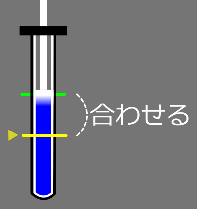

内視鏡: トモエ・タチバナEndoscopy: Tomoe Tachibana
- 現在書きかけにつき、記述内容やデータが正しくない場合があります。
- TIPS
-
分岐で迷ったら
分かれ道では、基本的に血溜まり等の患部が発生している方へ進むのが正解。もし患部が見えない場合はレーダーを見る。分かれ道の奥が見えるように視点を操作して、レーダー内の黄色い点が大きくなるようならその道が正解。
安全に前進する
ABを押したままリモコンを前に押し出そうとすると、ABを押した時点でリモコンの微妙な動きを読んでしまって後退する時がある。
安全に進むなら、リモコンを前に突き出し始めたらABを押そう。
注射のCOOL判定
ピストン部のグラデーションになっている所の中心が、目標の横線と一致するように離す。要はど真ん中を狙う。

蠕動運動での危険回避
腸を通るときは蠕動運動によって流されてしまうが、壁にぶつかるのはABボタンを押しているときだけなので、危険を感じたらABを離そう。そして落ち着いて角度を調整して抜けだそう。
メスの判定
腫瘍を切る時にはガイドが表示され、メスを入れることで切除することができる。大抵は3回くらい切除することで完全に切ることができるが、一度切除した後は、一旦ガイドの外へメスを移動させないとガイドにの通りに動かしてもメスで切れないので注意しよう。
また、ガイドの大きさは目標との距離で決まるので、ある程度離れた方が切りやすい。
バイタル注射は控えめに
内視鏡の仕様上、バイタル注射を打つためには結構な時間が掛かってしまうため、何度も回復しているとそれだけでタイムロスとなる。
可能なら少しでも多くの患部を処置してバイタルの自然現象速度を抑えてから一気に回復しよう。
- 2迷いと笑顔/Insecure Smiles
-
Special Bonus
条件 Intern Resident Specialist BAD判定ゼロ - - - 胃の患部全てを@秒以内に処置する 150 90 60 壁に@回以上当たらない 4 3 2 バイタルを@以下にしない 15 15 15 Operation Rank
ランク Intern Resident Specialist C ～5699 ～6199 ～6699 B 5700～7099 6200～7399 6700～7699 A 7100～7799 7400～7999 7700～8199 S 7800～ 8000～ 8200～8499 XS - - 8500～ XS Time Limit
GOODの数 クリアタイム 0 1分0秒 XS Talk
マリア「いやぁ…凄ぇモンだ。ビックリして言葉も出ねぇよ！」
トモエ「…ええ、本当に。本国の職人達には感心します」Movie

- 3充実のひととき/Moment of Zen
-
Special Bonus
条件 Intern Resident Specialist BAD判定ゼロ - - - 噴門・幽門の通過でミスをしない - - - 小腸で壁に当たらない - - - バイタルを@以下にしない 21 20 20 Operation Rank
ランク Intern Resident Specialist C ～6699 ～7199 ～7699 B 6700～8299 7200～8499 7700～8699 A 8300～8999 8500～9099 8700～9199 S 9000～ 9100～ 9200～9499 XS - - 9500～ XS Time Limit
GOODの数 クリアタイム 0 4分40秒 1 4分10秒 XS Talk
医局長「うわぉっ…！アンタ、腕を上げたわねぇ！？」
トモエ「有り難う御座います、医局長。日々、精進するのみですから」Movie

- 4傀儡は憂う/Marionette's Lament
-
Special Bonus
条件 Intern Resident Specialist COOL判定@回以上 6 10 12 蠕動運動の開始地点まで戻されない - - - 小腸で壁に当たらない - - - バイタルを@以下にしない 21 20 20 Operation Rank
ランク Intern Resident Specialist C ～6699 ～7099 ～7499 B 6700～7899 7100～8199 7500～8499 A 7900～8599 8200～8799 8500～8999 S 8600～ 8800～ 9000～9299 XS - - 9300～ XS Time Limit
GOODの数 クリアタイム 0 6分20秒 1 5分50秒 XS Talk
ハンク「フム…何と素晴らしい技術だ。貴女を手伝えた事を誇りに思います」
トモエ「いえ、私がお役に立てたのでしたら、これ以上、嬉しい事は有りませんから」
ハンク「ムゥ…何と奥ゆかしい事を仰るのか。貴女こそ大和撫子だ！」Movie

- 5武神の血を継ぐ者/The Healing Warrior
-
Special Bonus
条件 Intern Resident Specialist BAD判定ゼロ - - - ガイドゲートを@ヵ所以上開かない 7 7 6 手術時間@秒以内 540 360 200 壁に@回以上当たらない 4 3 2 Operation Rank
ランク Intern Resident Specialist C ～4999 ～5699 ～6399 B 5000～6399 5700～6899 6400～7399 A 6400～7499 6900～7699 7400～7899 S 7500～ 7700～ 7900～8199 XS - - 8200～ XS Time Limit
GOODの数 クリアタイム 0 4分00秒 1 3分30秒 2 3分00秒 XS Guide
内視鏡で分かれ道がある場合は、基本的に血溜まりや出血等が発生しているほうへ進むのが正解となる。
- 最初の分かれ道は左へ
- 次の分かれ道は右上へ
- 次の分かれ道は左へ
- ゲートをくぐった先の上下の分かれ道は上へ
- ゲートをくぐった先の上下の分かれ道も上へ
- 最後に、ゲートをくぐった先の左下と右上の分かれ道は左下へ
これでようやく目的地である破裂箇所に到達できる。ここである程度暇ができるので、ここまでくるのにバイタル注射は使わないようにした。
破裂箇所に到達すると一定時間毎に4個まで出血が発生する。バイタルを回復しながら出血が現れたら処置しよう。そして、4個目を処置すると同時に十字キー下を押してひたすら後退する。
ゲートを2つ戻ったら上下の分かれ道だった場所に出る。レーダーで患部反応がはっきり出る場所だ。分かれ道の下を進もう。
血栓を処置すると出血が発生する。処置後は破裂箇所に戻って出血を全て処置してスプレーをかければ終了となる。
迷わないこととバイタル管理
数回やれば迷うことは無いだろう。患部がある方向へ進めばいいので、迷う余地は無いと思われる。
むしろ、意外とバイタルの自然減少が早いので、無駄な注射を打たないように、移動する前に必要なだけ回復しておこう。
破裂箇所ではバイタルを最大に。血栓処置前に50前後、処置後も50前後は欲しい。
XS Talk
ゲイブ「…大したモンだぜ、恐れ入る。何つー迅速で、的確なオペだよ」
トモエ「え…あ、いえ！私は、その、必死でしたので…」
ゲイブ「ハ…どうだろうと変わらねぇさ。お前がやった事は、紛れも無い奇跡だぜ」Movie

- 6覚悟/Resolution
-
Special Bonus
条件 Intern Resident Specialist 映像を@回以上途切れさせない 2 2 1 同じ要救助者の所を2回訪れない - - - 壁に@回以上当たらない 6 4 2 手術時間@秒以内 480 300 180 Operation Rank
ランク Intern Resident Specialist C ～3199 ～3799 ～4399 B 3200～4999 3800～5199 4400～5399 A 5000～5499 5200～5699 5400～5899 S 5500～ 5700～ 5900～6199 XS - - 6200～ XS Time Limit
GOODの数 クリアタイム - 2分40秒 XS Talk
ハンク「…何と言う強さ、何と言う忍耐。私は…自分の弱さが恥ずかしい」
トモエ「…いいえ、私も同じです。私独りでは…何も出来ませんでした…」
ハンク「ムゥ…それは違います、タチバナ先生。貴女は、正に聖女の様な方だ！」Movie

- » 診断: ガブリエル・カニンガム